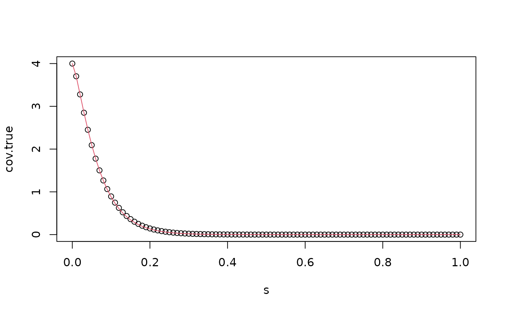

Rational approximation of the Matern fields on intervals and metric graphs
Source:R/stationary1d.R
matern.rational.RdThe function is used for computing an approximation, which can be used for inference and simulation, of the fractional SPDE $$(\kappa^2 - \Delta)^{\alpha/2} (\tau u(s)) = W$$ on intervals or metric graphs. Here \(W\) is Gaussian white noise, \(\kappa\) controls the range, \(\alpha = \nu + 1/2\) with \(\nu>0\) controls the smoothness and \(\tau\) is related to the marginal variances through $$\sigma^2 = \frac{\Gamma(\nu)}{\tau^2\Gamma(\alpha)2\sqrt{\pi}\kappa^{2\nu}}.$$
Arguments
- graph
Metric graph object. The default is NULL, which means that a stationary Matern model on the line is created.
- loc
Locations where to evaluate the model.
- bc
Specifies the boundary conditions. The default is "free" which gives stationary Matern models on intervals. Other options are "Neumann" or "Dirichlet".
- kappa
Range parameter
- range
practical correlation range
- nu
Smoothness parameter
- sigma
Standard deviation
- tau
Precision parameter
- alpha
Smoothness parameter
- m
The order of the approximation
- parameterization
Which parameterization to use?
maternuses range, std. deviation and nu (smoothness).spdeuses kappa, tau and alpha. The default ismatern.- type_rational_approximation
Method used to compute the coefficients of the rational approximation.
- type_interp
Interpolation method for the rational coefficients.
Examples
s <- seq(from = 0, to = 1, length.out = 101)
kappa <- 20
sigma <- 2
nu <- 0.8
r <- sqrt(8*nu)/kappa #range parameter
op_cov <- matern.rational(loc = s, nu = nu, range = r, sigma = sigma, m = 2,
parameterization = "matern")
cov.true <- matern.covariance(abs(s-s[1]), kappa = kappa, sigma = sigma, nu = nu)
cov.approx <- op_cov$covariance(ind = 1)
plot(s, cov.true)
lines(s, cov.approx, col = 2)
